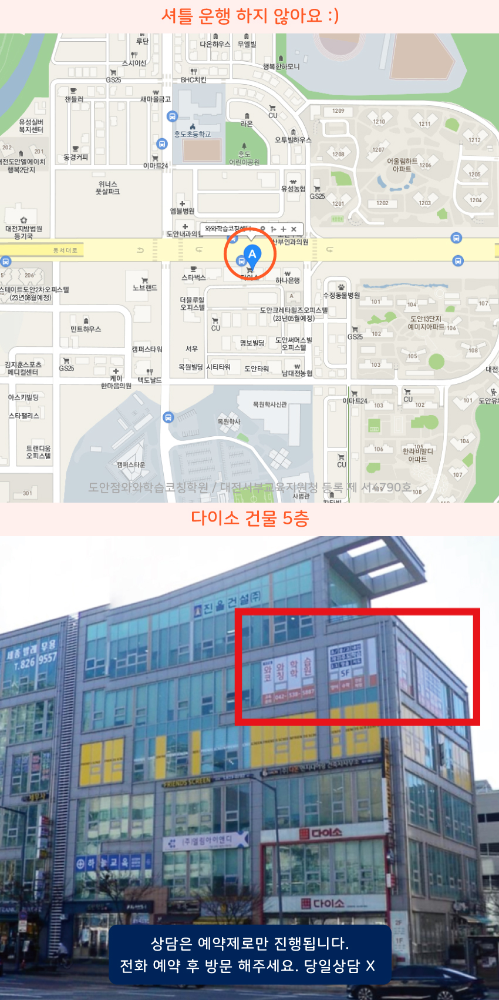

Area
도안지구 초등학생학원
도안지구와 도안동 원신흥동 용계동에서 초등학원 찾는다면 수업 시간표와 숙제 점검 방식부터 확인해 보세요. 개별 학습 수준을 진단해 과목별 목표를 정리하고 정기 상담으로 진행을 공유하는 곳이 편안합니다.
Area
도안지구와 도안동 원신흥동 용계동에서 초등학원 찾는다면 수업 시간표와 숙제 점검 방식부터 확인해 보세요. 개별 학습 수준을 진단해 과목별 목표를 정리하고 정기 상담으로 진행을 공유하는 곳이 편안합니다.
Schools
도안지구 초등학원은 도안중과 유성중 기초개념 점검, 단계별 문제풀이와 오답 재학습으로 내신 대비를 돕고 주간 학습표로 관리하며 수업 후 피드백을 제공합니다.
Academy
도안지구에서 초등 수업을 따라가다 보면, 성적이 생각보다 안 오르는 시기가 자주 생깁니다. 숙제는 했는데 시험에서만 점수가 흔들리거나, 개념은 아는 것 같지만 서술형이나 문제 연결에서 멈추는 경우가 많아요. 이런 흐름은 도안동과 원신흥동, 용계동처럼 학습 자원이 많은 지역일수록 더 비교와 자극이 커져서 생기기도 해서, 초반에 학습 습관을 점검하는 게 중요합니다.
3월부터는 과목별로 다른 방식으로 관리해야 합니다. 흥도초, 상원초, 도솔초처럼 기초를 다지는 단계에서는 단원별 개념 정리와 오답 문장화가 핵심이고, 봉명초에서는 문제를 푼 뒤 이유를 다시 말로 풀어보게 하는 과정이 도움이 됩니다. 이후 중등 전환을 고려해 플래너로 공부 시간과 범위를 짧게 쪼개면, 도안중이나 유성중에서도 진도가 밀리지 않습니다.
중간고사 전에는 단순히 양을 늘리기보다 유형을 정리하는 순서가 필요합니다. 도안중 학생이라면 수업에서 나온 실수 패턴을 표시해 같은 실수를 줄이고, 유성중은 서술형에서 감점 포인트를 먼저 확인한 뒤 연습 횟수를 조절하는 편이 효율적입니다. 고등 과정에서는 도안고, 유성고뿐 아니라 대전체고나 대전예고, 유성생명과학고 방향까지 고려해야 해서, 시험 한 달 전부터는 단원 통합 문제와 시간 제한 연습을 함께 가져가야 합니다.
학원을 고를 때는 수업만 보는지, 학습 관리까지 함께 설계하는지 확인해보세요. 도안지구 일대일학원에서 개별 진도와 오답 재정리를 어떻게 운영하는지, 또 도안지구 1:1학원에서 플래너와 학습코칭을 통해 계획이 실제 공부로 이어지게 하는지 살펴보면 좋습니다. 특히 초등에서 중등, 중등에서 고등으로 갈수록 같은 수업이라도 결과가 달라지니, 어떤 기준으로 점검하고 조정하는지 그 절차를 체크하는 것이 가장 현실적인 선택입니다.

Programs

목표 점수와 시험 일정을 기준으로 주간 학습량을 설계하고, 매일 실천 가능한 플래너 루틴을 잡아줍니다.

학생별 이해도에 맞춘 개념 설명, 유형 적용, 반복 훈련, 오답 정리로 부족한 단원을 보완해나갑니다.

하원 이후에도 과제 수행률 확인과 학원 밖 공부 습관까지 이어갑니다.


자기주도학습력을 형성 시킬 수 있도록 플랜, 학습, 숙제관리가 들어갑니다.

Map

Apply
순차적으로 연락드려 예약 도와드립니다.
Guide
| 횟수 | 초등 | 중등 | 고등 |
|---|---|---|---|
| 주 5회 | 339,000원 | 336,000원 | 419,000원 |
| 주 4회 | 279,000원 | 301,000원 | 344,000원 |
| 주 3회 | 219,000원 | 236,000원 | - |
| 횟수 | 초등 | 중등 | 고등 |
|---|---|---|---|
| 주 5회 | 389,000원 | 416,000원 | 469,000원 |
| 주 4회 | 319,000원 | 341,000원 | 384,000원 |
| 주 3회 | 249,000원 | 266,000원 | - |
학년, 과목, 수업 시수, 지역에 따라 수업료가 달라질 수 있습니다.
초등학생의 학년과 학습 수준을 고려해 기초 개념부터 차근차근 지도합니다. 영어·수학·국어 과목별로 꼭 알아야 할 내용을 익히고, 학교에서 배운 내용을 충분히 이해하고 활용할 수 있도록 학습을 진행합니다.
어릴 때부터 올바른 공부 습관을 형성할 수 있도록 학습 계획과 과제 수행 과정을 함께 관리합니다. 정해진 분량을 꾸준히 공부하고 스스로 복습하는 연습을 통해 자기주도적인 학습 태도를 길러갑니다.
학생의 현재 이해도와 학습 성취도를 확인한 뒤 적절한 선행학습 방향을 안내합니다. 무리하게 진도를 앞서가기보다 기존 개념을 충분히 익혔는지 점검하고, 다음 학년의 학습 내용을 자연스럽게 받아들일 수 있도록 준비합니다.